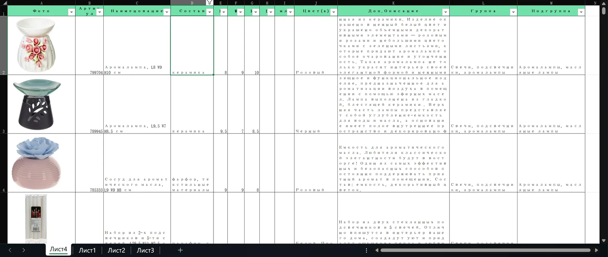
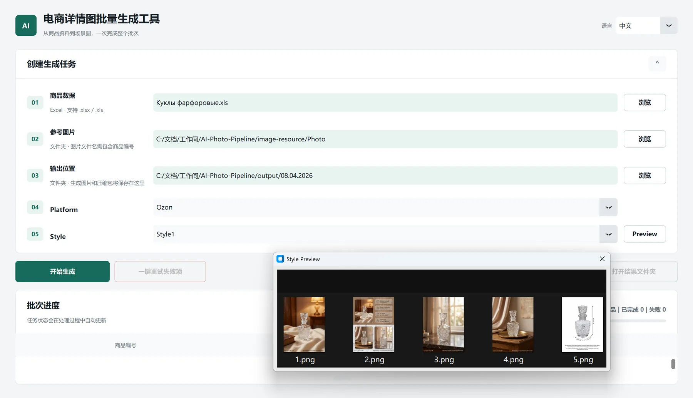

极致“傻瓜式”体验：告别 Prompt 炼丹
将操作门槛降至零。不需要懂 ComfyUI 的复杂连线，不需要理解底层大模型机制，甚至不需要业务员手写一句提示词（Prompt）。全自动化解析需求，小白员工只需“点击开始”，即可坐等高质量成图。
小到只需点击开始，大到支撑 10,000+ SKU、40 万张商业级图片的无人生产线。
01 / Project background
为了实现企业从线下零售/批发市场到电商市场的战略转型，集团决定在复活节营销旺季前，将仓库中 10,000+ SKU 全面上线（7-8 家并行店铺）。为了应对电商平台的防重复铺货算法，每个 SKU 需要生成 8 种完全不同风格的详情页图。 当时已经是1月份，这意味着，我们需要在 3 个月内产出 40 万张 商业级图片。摊派到每天，产能指标高达 4000 张/天，而我们极其优秀的设计师团队即便满负荷运转，极限产能也仅为 50 张/天，还不及目标零头。企业主管表示，如果产能达不到预期，无法在节日前上线大部分产品，这个项目便毫无意义，希望运用AI的力量，实现这在过去无法实现的宏伟目标。
为填补巨大的产能缺口，公司内部并行启动了多组人马各自研发独立的方案。我的方案受主管青睐，在其推动下，我的方案被推广到各个部门大规模使用，最终企业顺利完成了上线铺货目标，收益惊人，以极低的成本和时间证明了转型电商战略的可行性。
02 / Core proposition
将操作门槛降至零。不需要懂 ComfyUI 的复杂连线，不需要理解底层大模型机制，甚至不需要业务员手写一句提示词（Prompt）。全自动化解析需求，小白员工只需“点击开始”，即可坐等高质量成图。
系统被设计为高度自治的“无人流水线”。在启动后，自动接管批量任务，实现 7×24 小时不间断的无缝生图。将人为干预节点压缩到极致，彻底解放营销与设计团队的双手。
内置极强的自适应引擎，告别死板的固定模板。无论输入的产品体积大小、所属品类，还是当前的营销节点（如复活节、圣诞节），以及不论面向什么平台，什么风格，系统都能动态分析并自动匹配最契合的场景光影与生图提示词。
在复杂的自动化链路中提供令人安心的兜底策略。无论是遭遇外部云端模型 API 宕机崩溃、输入的产品基础信息残缺，还是生成链路中的任何单一节点报错，系统都能通过“优雅降级”和重试机制自我恢复，确保流水线永不中断。
02.1 / Input & output
业务员需要准备好SKU信息列表，对格式没有要求。在我们企业，这些产品列表是固定资产，无需再准备。

可点击上方节点、图片两侧箭头，或使用键盘 ← → 切换
Selected output
一下所有成品均由该应用一次性出图，无需任何二次创作，人为编辑以及撰写任何提示词。
03 / Product features
Step 1
“摒弃了传统 AI生图 工具（例如Comfy UI）复杂的节点连线与参数调试。业务员只需指定‘商品数据表 (Excel)’、‘源图目录’和‘输出路径’，以及选定面向的平台和预设的风格模板，系统便会自动解析成百上千个 SKU 的生图需求。对于非技术员工来说，操作门槛几乎为零——你只需准备好数据，剩下的交给系统。”

Battle log
“本地 GPU 算力捉襟见肘，如果依赖人力和本地机器，这几乎是一个死局。”
💡 破局之道：云端高并发架构 ➕ 极致自动化工作流
asyncio + 信号量构建强健的并发任务池，彻底榨干 API 性能极限。“不可能靠人手去给上万个商品写提示词，我们需要一套能理解多维商业规则的智能引擎。”
💡 破局之道：Agentic Workflow ➕ 渐进式披露（Progressive Disclosure）
“自动化最怕意外。一个报错卡死整条产线，或陷入无限重试死循环，都会导致满盘皆输。”
💡 破局之道：状态机断点续跑 ➕ 优雅降级 ➕ 极简“死信”与 HITL 机制
“返工比重做更痛苦。指望用‘海量生成、盲盒抽卡’来提高容错率，在商业预算面前根本行不通。”
💡 破局之道：“戴着镣铐跳舞”的边界控制 ➕ 数据驱动的美学迭代
Final result
得益于云端高并发与全自动流水线，系统理论产能达到惊人的数千张/小时。在实际投产中，即便算上人工准备源数据与最后质检的时间，单名业务员的日均产出依然稳定在 1100 个 SKU（约 5500 张图）以上。
在项目竞演中，其他内部团队的方案废片率高达 20%。而凭借我对 Prompt 的严苛边界控制，在我个人直接交付的 1400+ 个 SKU（约 7000+ 张图）中，仅有 22 个 SKU 收到营销部门的返工请求。高达 98% 以上的合格率，直接促成了主管决定将我的方案作为企业级标准，推广至全员使用。
我引入了“多宫格生成后自动裁剪”的工程技巧，并根据图像难度动态路由不同规格的模型。这套组合拳将一套详情图生成成本压缩至常规商业方案的十几分之一 。整个 40 万张图的宏大项目，总算力成本仅控制在数万元人民币内——这甚至略低于其他方案组的启动资金（用于购置数张高级显卡以本地部署Qwen/Flux模型），也远低于聘请一位全职设计师的成本。
技术的最终目的是服务商业。我的系统成功保障了公司在复活节旺季前，将仓库中 90% 的产品（10,000+ SKU）全面铺向线上矩阵。在 Ozon 和 Wildberries 两大平台上，我们顺利增开了 8 家并行网店。截至 2026 年 6 月底，这些新店的营销量较过去三年激增 65%，实际利润（Real Money）更是近乎翻倍。